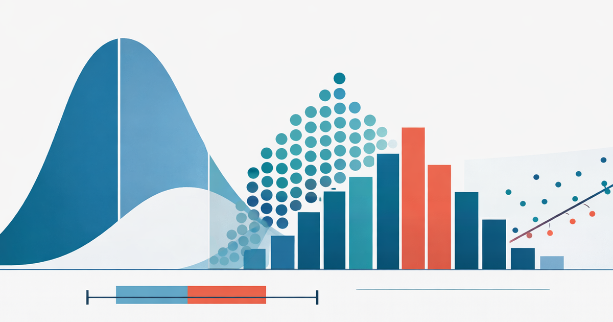

StatBench

Explore Data
Descriptive Statistics
Summary stats, histogram, boxplot, and dotplot for one numeric variable.
Two-Variable (Regression)
Scatterplot with least-squares line, correlation, and residuals.
Categorical Data
Contingency tables with proportion toggles and bar chart modes.
Sampling & Variability
Sampling Distributions
Draw samples, compute statistics, watch the sampling distribution build. See the CLT in action.
CI Coverage
Draw 100 confidence intervals and see what "95% confidence" really means.
Simulation-Based Inference
Confidence Intervals (Bootstrap)
CI for a Mean
Bootstrap a single mean, median, or SD.
CI for a Proportion
Bootstrap a single proportion. See the lumpy discrete distribution.
CI for Difference in Means
Bootstrap the difference between two group means.
CI for Paired Differences
Bootstrap mean difference from matched pairs.
CI for Regression Slope
Resample (x, y) pairs, refit lines, build CI for slope.
Hypothesis Tests (Randomization)
Test for a Proportion
Simulate under the null to test a single proportion.
Test for Difference in Proportions
Shuffle group labels to test two proportions.
Test for Difference in Means
Permutation test for two group means.
Chi-Square Test
Randomization test for a contingency table. Always right-skewed.
Distribution Calculators
Normal
Probabilities and critical values for the normal distribution.
t
Student's t-distribution with adjustable degrees of freedom.
Chi-Square
Chi-square distribution calculator.
F
F distribution with numerator and denominator df.
Binomial
Discrete PMF, cumulative probabilities, normal approximation overlay.